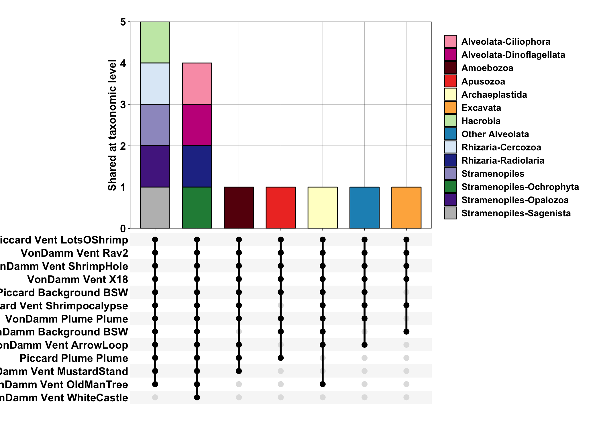

library(tidyverse); library(phyloseq); library(ape)18S survey
Compile ASV data from MCR from previous sequence analysis
Set up R environment
Import previously sequenced and analyzed tag-sequence data. See https://shu251.github.io/microeuk-amplicon-survey/ for additional information.
Import metadata
metadata <- read.csv("../../microeuks_deepbiosphere_datamine/microeuk-amplicon-survey/data-input/samplelist-metadata.csv")
# head(metadata)
# unique(metadata$Sample_actual)
mcr <- c("VonDamm", "Piccard")
metadata_formatted <- metadata %>%
filter(SITE %in% mcr) %>%
mutate_all(as.character) %>%
filter(Sample_or_Control == "Sample") %>%
filter(!(SAMPLETYPE == "Microcolonizer")) %>%
select(SAMPLE, VENT, SITE, SAMPLEID, DEPTH, SAMPLETYPE, YEAR, TEMP = starts_with("TEMP"), pH, PercSeawater = starts_with("Perc"), Mg = starts_with("Mg"), H2 = starts_with("H2."), H2S = starts_with("H2S"), CH4 = starts_with("CH4"), ProkConc, Sample_or_Control)Import decontam results to QC ASV table
load("../../microeuks_deepbiosphere_datamine/microeuk-amplicon-survey/seq-analysis/contam-asvs.RData", verbose= TRUE)Loading objects:
list_of_contam_asvs# class(list_of_contam_asvs)asv_wtax_qc <- merged_asv %>%
select(FeatureID = '#OTU ID', everything()) %>%
filter(!(FeatureID %in% list_of_contam_asvs)) %>%
# In wide format, subsample 1000 random ASVs
# sample_n(1000, replace = FALSE) %>%
pivot_longer(cols = !FeatureID,
names_to = "SAMPLE", values_to = "value") %>%
filter(grepl("_MCR_", SAMPLE)) %>%
left_join(merged_tax, by = c("FeatureID" = "Feature ID")) %>%
left_join(filter(metadata_formatted, grepl("_MCR_", SAMPLE))) %>%
unite(SAMPLENAME, SITE, SAMPLETYPE, YEAR, VENT, SAMPLEID, sep = " ", remove = FALSE)
# dim(asv_wtax_qc)
# length(unique(asv_wtax_qc$FeatureID))tax_matrix <- asv_wtax_qc %>%
select(FeatureID, Taxon) %>%
distinct() %>%
separate(Taxon, c("Domain", "Supergroup",
"Phylum", "Class", "Order",
"Family", "Genus", "Species"), sep = ";") %>%
column_to_rownames(var = "FeatureID") %>%
as.matrix
# dim(tax_matrix)
asv_matrix <- asv_wtax_qc %>%
select(FeatureID, SAMPLE, value) %>%
pivot_wider(names_from = SAMPLE, values_from = value, values_fill = 0) %>%
column_to_rownames(var = "FeatureID") %>%
as.matrix
# dim(asv_matrix)
# dim(asv_matrix); dim(tax_matrix)
# Align row names for each matrix
rownames(tax_matrix) <- row.names(asv_matrix)
# dim(asv_matrix)
mcr_samples <- as.character(colnames(asv_matrix))
# Set rownames of metadata table to SAMPLE information
metadata_mcr <- filter(metadata_formatted, SAMPLE %in% mcr_samples) %>%
rownames_to_column(var = "X") %>%
column_to_rownames(var = "SAMPLE")
# dim(metadata_mcr)Import as phyloseq objects
# Import asv and tax matrices
ASV = otu_table(asv_matrix, taxa_are_rows = TRUE)
TAX = tax_table(tax_matrix)
phylo_obj <- phyloseq(ASV, TAX)
# phylo_obj
# Import metadata as sample data in phyloseq
samplenames <- sample_data(metadata_mcr)
# samplenames
# join as phyloseq object
physeq_wnames = merge_phyloseq(phylo_obj, samplenames)
# colnames(ASV)
# TAX
## Check
physeq_wnamesphyloseq-class experiment-level object
otu_table() OTU Table: [ 17878 taxa and 23 samples ]
sample_data() Sample Data: [ 23 samples by 16 sample variables ]
tax_table() Taxonomy Table: [ 17878 taxa by 8 taxonomic ranks ]ntaxa(physeq_wnames) #17878[1] 17878nsamples(physeq_wnames) #23[1] 23# # physeq_wnames # run with sample, 1000 tax.
# # head(taxa_names(physeq_wnames))
mcr_tree <- rtree(ntaxa(physeq_wnames), rooted = TRUE, tip.label = taxa_names(physeq_wnames))
# class(mcr_tree)
# ?merge_phyloseq
physeq_mcr <- merge_phyloseq(physeq_wnames, mcr_tree)Save output ASV tables for downstream analyses
# phylo_obj <- phyloseq(ASV, TAX)
# samplenames <- sample_data(metadata_formatted)
# physeq_wnames = merge_phyloseq(phylo_obj, samplenames)
# dim(asv_wtax_qc)
# physeq_wnames
#
# save(phylo_obj, samplenames, physeq_wnames, metadata_mcr, asv_wtax_qc, TAX, tax_matrix, physeq_mcr, file = "input-data/MCR-amplicon-data.RData")Sequence stats
Total ASVs and sequences for each sample.
asv_wtax_qc %>%
filter(value > 0) %>%
group_by(SAMPLE, VENT, SITE) %>%
summarise(SUM_stats = sum(value),
ASV_stats = n_distinct(FeatureID)) %>%
pivot_longer(cols = ends_with("_stats")) %>%
ggplot(aes(x = SAMPLE, y = value)) +
geom_bar(stat = "identity") +
coord_flip() +
# geom_hline(yintercept=10000, linetype="dashed", color = "green") +
facet_grid(. ~ name, scales = "free") +
theme_linedraw()`summarise()` has grouped output by 'SAMPLE', 'VENT'. You can override using
the `.groups` argument.Create supplementary table with ASV and sequence stats.
table_supp_seqstats <- asv_wtax_qc %>%
filter(value > 0) %>%
group_by(SAMPLE, VENT, SITE) %>%
summarise(SUM_stats = sum(value),
ASV_stats = n_distinct(FeatureID))`summarise()` has grouped output by 'SAMPLE', 'VENT'. You can override using
the `.groups` argument.# write.csv(table_supp_seqstats, file = "output-data/supp-table-sequencestats.csv")Visualize metadata
env_params <- read.delim(file = "table_wenv.txt", sep = " ")
subset_metadata <- env_params %>%
filter(SAMPLETYPE != "Incubation") %>%
filter(VENT != "Quakeplume") %>%
select(SITE, VENT, SAMPLETYPE, RATE_min, EUK_ml, GRAZING_EFFECT_hr) %>%
distinct() %>%
group_by(SITE, VENT, SAMPLETYPE) %>%
summarise(RATE_min_avg = mean(RATE_min),
EUK_ml_avg = mean(EUK_ml),
GRAZING_EFFECT_hr_avg = mean(GRAZING_EFFECT_hr)) %>%
distinct() %>%
pivot_longer(cols = ends_with("_avg"))`summarise()` has grouped output by 'SITE', 'VENT'. You can override using the
`.groups` argument.metadata_numeric <- metadata_mcr %>%
filter(SAMPLETYPE != "Incubation") %>%
select(VENT, SITE, SAMPLETYPE, DEPTH, TEMP, pH, PercSeawater, Mg, H2, H2S, CH4, ProkConc) %>%
distinct() %>%
pivot_longer(cols = DEPTH:ProkConc, values_to = "VALUE_TMP") %>%
mutate(value = as.numeric(VALUE_TMP)) %>% select(-VALUE_TMP) %>%
bind_rows(subset_metadata)Warning in mask$eval_all_mutate(quo): NAs introduced by coerciontileplot_env <- function(x){
metadata_numeric %>%
filter(name == x) %>%
ggplot(aes(x = name, y = VENT, fill = value)) +
geom_tile(color = "black") +
facet_grid(SITE + SAMPLETYPE ~ ., switch = "both", space = "free", scale = "free") + theme_linedraw() +
theme(axis.text.y = element_blank(),
strip.text = element_blank(),
strip.background = element_blank(),
axis.ticks = element_blank(),
strip.placement = "outside",
legend.title = element_blank(),
legend.position = "top",
legend.text = element_text(size = 5),
panel.background = element_blank(),
panel.border = element_blank(),
panel.grid = element_blank()) +
labs(x = "", y = "") +
scale_fill_distiller(palette = "Reds", direction=2, na.value = "grey50")
}# plot_grid(
# tileplot_env("TEMP") +
# scale_fill_distiller(palette = "YlOrRd", direction=2, na.value = "grey50") +
# theme(axis.text.y = element_text(color = "black", hjust = 1, vjust = 0),
# strip.text.y = element_text(color = "black", hjust = 0, vjust = 0),
# strip.placement = "outside"),
# tileplot_env("PercSeawater") +
# scale_fill_distiller(palette = "Blues", direction=2, na.value = "grey50"),
# tileplot_env("pH") +
# scale_fill_distiller(palette = "YlGnBu", direction=2, na.value = "grey50"),
# tileplot_env("Mg") +
# scale_fill_distiller(palette = "Purples", direction=2, na.value = "grey50"),
# # endemic_env("NO3"),
# tileplot_env("H2") +
# scale_fill_distiller(palette = "Purples", direction=2, na.value = "grey50"),
# tileplot_env("CH4") +
# scale_fill_distiller(palette = "Purples", direction=2, na.value = "grey50"),
# tileplot_env("H2S") +
# scale_fill_distiller(palette = "Purples", direction=2, na.value = "grey50"),
# tileplot_env("ProkConc") +
# scale_fill_distiller(palette = "Oranges", direction=2, na.value = "grey50"),
# tileplot_env("EUK_ml_avg") +
# theme(axis.text.y = element_text(color = "black", hjust = 1, vjust = 0),
# strip.text.y = element_text(color = "black", hjust = 0, vjust = 0),
# strip.placement = "outside") +
# scale_fill_distiller(palette = "Oranges", direction=2, na.value = "grey50"),
# tileplot_env("GRAZING_EFFECT_hr_avg") +
# scale_fill_distiller(palette = "Oranges", direction=2, na.value = "grey50"),
# nrow = 1,
# rel_widths = c(4,1,1,1,1,1,1,1, 4, 1)
# )Community structure & diversity at Von Damm & Piccard
Cluster analysis
Ordination analysis
library(vegan); library(ggdendro); library(compositions)Loading required package: permuteLoading required package: latticeThis is vegan 2.6-2Welcome to compositions, a package for compositional data analysis.
Find an intro with "? compositions"
Attaching package: 'compositions'The following object is masked from 'package:ape':
balanceThe following objects are masked from 'package:stats':
anova, cor, cov, dist, varThe following objects are masked from 'package:base':
%*%, norm, scale, scale.defaultCluster analysis with grazing assays
# head(asv_wtax_qc)
asv_mcr_numeric <- asv_wtax_qc %>%
filter(value > 0) %>%
group_by(FeatureID, SAMPLENAME) %>%
summarise(MEAN_ACROSS_REPS = mean(value)) %>%
select(FeatureID, SAMPLENAME, MEAN_ACROSS_REPS) %>%
pivot_wider(names_from = SAMPLENAME, values_from = MEAN_ACROSS_REPS, values_fill = 0) %>%
column_to_rownames(var = "FeatureID")`summarise()` has grouped output by 'FeatureID'. You can override using the
`.groups` argument.Transform compositional data
logratio_mcr <- data.frame(compositions::clr(t(asv_mcr_numeric)))
# dim(logratio_mcr)
# ?alr()
# ?ilr()
pca_logratio <- prcomp(logratio_mcr)
variance_logratio <- (pca_logratio$sdev^2)/sum(pca_logratio$sdev^2)
barplot(variance_logratio, main = "Log-Ratio PCA Screeplot", xlab = "PC Axis", ylab = "% Variance",
cex.names = 1.5, cex.axis = 1.5, cex.lab = 1.5, cex.main = 1.5)
# Extract PCA points
mcr_pca_pts <- data.frame(pca_logratio$x, SAMPLE = rownames(pca_logratio$x)) %>%
rownames_to_column(var = "SAMPLENAME") %>%
separate(SAMPLENAME, c("SITE", "SAMPLETYPE", "YEAR", "VENT"), " ",
remove = FALSE) Warning: Expected 4 pieces. Additional pieces discarded in 21 rows [1, 2, 3, 4,
5, 6, 7, 8, 9, 10, 11, 12, 13, 14, 15, 16, 17, 18, 19, 20, ...].PCoA with all samples
mcr_pca_pts %>%
mutate(TYPE = case_when(
SAMPLETYPE == "Incubation" ~ "Incubation",
TRUE ~ "in situ"
)) %>%
ggplot(aes(x = PC1, y = PC2)) +
geom_point(color = "black", size = 4, aes(shape = SITE, fill = VENT, alpha = TYPE)) +
scale_shape_manual(values = c(21, 24)) +
scale_alpha_manual(values = c(1,0.4)) +
theme_linedraw() +
guides(fill = guide_legend(override.aes = list(shape = c(22)))) Dendrogram analysis
# ?decostand()
# Relative abundance
rel_abun <- decostand(asv_mcr_numeric, MARGIN = 2, method = "total")
# Cluster dendrogram (average hierarchical clustering)
cluster_mcr <- hclust(dist(t(rel_abun)), method = "average")
dendro <- as.dendrogram(cluster_mcr)
mcr_dendro <- dendro_data(dendro, type = "rectangle")mcr_dendro_plot <- ggplot(segment(mcr_dendro)) +
geom_segment(aes(x = x, y = y, xend = xend,
yend = yend)) +
coord_flip() +
scale_y_reverse(expand = c(0.2, 0.5), breaks = c(0, 0.2, 0.4, 0.6, 0.8)) +
geom_text(aes(x = x, y = y, label = label, angle = 0, hjust = 0), data = label(mcr_dendro)) +
theme_dendro() + labs(y = "Dissimilarity") +
theme(axis.text.x = element_text(color = "black", size = 14), axis.line.x = element_line(color = "#252525"),
axis.ticks.x = element_line(), axis.title.x = element_text(color = "black",
size = 14))
# svg('figs/SUPPLEMENTARY-dendrogram-wreps.svg', w = 10, h = 8)
mcr_dendro_plotPCoA with in situ only
asv_mcr_numeric_insitu <- asv_wtax_qc %>%
filter(value > 0) %>%
filter(SAMPLETYPE != "Incubation") %>%
group_by(FeatureID, SAMPLENAME) %>%
summarise(MEAN_ACROSS_REPS = mean(value)) %>%
select(FeatureID, SAMPLENAME, MEAN_ACROSS_REPS) %>%
pivot_wider(names_from = SAMPLENAME, values_from = MEAN_ACROSS_REPS, values_fill = 0) %>%
column_to_rownames(var = "FeatureID")`summarise()` has grouped output by 'FeatureID'. You can override using the
`.groups` argument.insitu_logratio_mcr <- data.frame(compositions::clr(t(asv_mcr_numeric_insitu)))
insitu_pca_logratio <- prcomp(insitu_logratio_mcr)
insitu_variance_logratio <- (insitu_pca_logratio$sdev^2)/sum(insitu_pca_logratio$sdev^2)
barplot(insitu_variance_logratio, main = "Log-Ratio PCA Screeplot", xlab = "PC Axis", ylab = "% Variance",
cex.names = 1.5, cex.axis = 1.5, cex.lab = 1.5, cex.main = 1.5)
# Extract PCA points for only insitu samples
insitu_mcr_pca_pts <- data.frame(insitu_pca_logratio$x, SAMPLE = rownames(insitu_pca_logratio$x)) %>%
rownames_to_column(var = "SAMPLENAME") %>%
separate(SAMPLENAME, c("SITE", "SAMPLETYPE", "YEAR", "VENT"), " ",
remove = FALSE) Warning: Expected 4 pieces. Additional pieces discarded in 13 rows [1, 2, 3, 4,
5, 6, 7, 8, 9, 10, 11, 12, 13].insitu_mcr_pca_pts %>%
mutate(TYPE = case_when(
SAMPLETYPE == "Incubation" ~ "Incubation",
TRUE ~ "in situ"
)) %>%
ggplot(aes(x = PC1, y = PC2)) +
geom_point(color = "black", size = 4, aes(shape = SITE, fill = VENT, alpha = TYPE)) +
scale_shape_manual(values = c(21, 24)) +
scale_alpha_manual(values = c(1,0.4)) +
theme_linedraw() +
guides(fill = guide_legend(override.aes = list(shape = c(22)))) # Keep same sample colors to compare to cluster analysis with in situ and Tf samples.Richness by site
Corncob
devtools::install_github("bryandmartin/corncob")Skipping install of 'corncob' from a github remote, the SHA1 (950f4f0a) has not changed since last install.
Use `force = TRUE` to force installationlibrary(corncob); library(phyloseq)load("input-data/MCR-amplicon-data.RData", verbose = TRUE)Loading objects:
phylo_obj
samplenames
physeq_wnames
metadata_mcr
asv_wtax_qc
TAX
tax_matrix
physeq_mcrExplore data input for corncob
otu_table(physeq_mcr)[1:3, 1:3]OTU Table: [3 taxa and 3 samples]
taxa are rows
52_MCR_Piccard_expTf_LotsOShrimp_A_0_Jun2021
9d4a549902de604c74ab0c60bb2b1b90 0
8d216a4d59a36e484c3cc570f2d6091c 0
86eb0e2a76681d0a5aada91615bfc041 0
53_MCR_Piccard_expTf_LotsOShrimp_B_0_Jun2021
9d4a549902de604c74ab0c60bb2b1b90 0
8d216a4d59a36e484c3cc570f2d6091c 0
86eb0e2a76681d0a5aada91615bfc041 0
54_MCR_VonDamm_expTf_MustardStand_0_0_Jun2021
9d4a549902de604c74ab0c60bb2b1b90 0
8d216a4d59a36e484c3cc570f2d6091c 0
86eb0e2a76681d0a5aada91615bfc041 0sample_data(physeq_mcr)[1:3, ] X VENT SITE SAMPLEID
52_MCR_Piccard_expTf_LotsOShrimp_A_0_Jun2021 2 LotsOShrimp Piccard
53_MCR_Piccard_expTf_LotsOShrimp_B_0_Jun2021 3 LotsOShrimp Piccard
54_MCR_VonDamm_expTf_MustardStand_0_0_Jun2021 9 MustardStand VonDamm
DEPTH SAMPLETYPE YEAR TEMP pH
52_MCR_Piccard_expTf_LotsOShrimp_A_0_Jun2021 Incubation 2020
53_MCR_Piccard_expTf_LotsOShrimp_B_0_Jun2021 Incubation 2020
54_MCR_VonDamm_expTf_MustardStand_0_0_Jun2021 Incubation 2020
PercSeawater Mg H2 H2S CH4
52_MCR_Piccard_expTf_LotsOShrimp_A_0_Jun2021 <NA> 0
53_MCR_Piccard_expTf_LotsOShrimp_B_0_Jun2021 <NA> 0
54_MCR_VonDamm_expTf_MustardStand_0_0_Jun2021 <NA> 0
ProkConc Sample_or_Control
52_MCR_Piccard_expTf_LotsOShrimp_A_0_Jun2021 Sample
53_MCR_Piccard_expTf_LotsOShrimp_B_0_Jun2021 Sample
54_MCR_VonDamm_expTf_MustardStand_0_0_Jun2021 Sampletax_table(physeq_mcr)[1:3, ]Taxonomy Table: [3 taxa by 8 taxonomic ranks]:
Domain Supergroup Phylum
9d4a549902de604c74ab0c60bb2b1b90 "Unassigned" NA NA
8d216a4d59a36e484c3cc570f2d6091c "Eukaryota" "Alveolata" "Ciliophora"
86eb0e2a76681d0a5aada91615bfc041 "Eukaryota" "Alveolata" "Ciliophora"
Class Order Family
9d4a549902de604c74ab0c60bb2b1b90 NA NA NA
8d216a4d59a36e484c3cc570f2d6091c "Spirotrichea" "Euplotia" "Aspidiscidae"
86eb0e2a76681d0a5aada91615bfc041 "Armophorea" "Armophorea_X" "Metopidae"
Genus Species
9d4a549902de604c74ab0c60bb2b1b90 NA NA
8d216a4d59a36e484c3cc570f2d6091c "Aspidisca" NA
86eb0e2a76681d0a5aada91615bfc041 "Metopus_1" "Metopus_sp."Compare in situ and Tf samples
Examine in situ to T final samples for presence/absence.
head(asv_wtax_qc)# A tibble: 6 21
FeatureID SAMPLE value Taxon Conse SAMPL VENT SITE SAMPL DEPTH SAMPL
<chr> <chr> <dbl> <chr> <dbl> <chr> <chr> <chr> <chr> <chr> <chr>
1 00056209 52_MC 0 Euka 0.8 "Picca Lots Picc "" "" Incuba
2 00056209 53_MC 0 Euka 0.8 "Picca Lots Picc "" "" Incuba
3 00056209 54_MC 0 Euka 0.8 "VonDa Must VonD "" "" Incuba
4 00056209 55_MC 0 Euka 0.8 "VonDa Shri VonD "" "" Incuba
5 00056209 57_MC 0 Euka 0.8 "Picca Shri Picc "" "" Incuba
6 00056209 58_MC 0 Euka 0.8 "VonDa Plume VonD "" "" Incuba
# with 10 more variables: YEAR <chr>, TEMP <chr>, pH <chr>,
# PercSeawater <chr>, Mg <chr>, H2 <chr>, H2S <chr>, CH4 <chr>,
# ProkConc <chr>, Sample_or_Control <chr>, and abbreviated variable names
# Consensus, SAMPLENAME, SAMPLEID, SAMPLETYPE# View(asv_wtax_qc)Calculate percent change from in situ to Tf for all grazing experiments
alv <- c("Alveolata-Ellobiopsidae", "Alveolata-Perkinsea", "Alveolata-Unknown", "Alveolata-Chrompodellids", "Alveolata-Apicomplexa")
# Extract taxa information
taxa_table <- data.frame(tax_table(TAX)) %>% rownames_to_column(var = "FeatureID")
perc_change <- asv_wtax_qc %>%
filter(value > 0) %>%
# Avg seq count by ASV across replicates
group_by(SITE, VENT, SAMPLETYPE, FeatureID) %>%
summarise(avg_seq = mean(value)) %>%
mutate(ASSAY = case_when(
SAMPLETYPE == "Incubation" ~ "Tf",
TRUE ~ "insitu"
)) %>%
ungroup() %>%
select(-SAMPLETYPE) %>%
pivot_wider(names_from = ASSAY, values_from = avg_seq, values_fn = sum) %>%
# Select only ASVs present in both in situ and incubation experiments.
drop_na() %>% # remove NAs
filter(!(insitu == 0 | Tf == 0)) %>% # remove if 1 or the other are zero
filter(!(insitu == 0 & Tf == 0)) %>%
mutate(seq_change = Tf - insitu) %>%
mutate(category_change = case_when(
seq_change < 0 ~ "Decrease",
seq_change > 0 ~ "Increase",
seq_change == 0 ~ "No Change")) %>%
# Add in supergroup information
left_join(select(taxa_table, FeatureID, Domain:Species) %>% distinct()) %>%
filter(Domain == "Eukaryota") %>%
filter(Supergroup != "Opisthokonta") %>%
mutate(Supergroup = ifelse(is.na(Supergroup), "Unknown Eukaryota", Supergroup),
Phylum = ifelse(is.na(Phylum), "Unknown", Phylum),
Phylum = ifelse(Phylum == "Alveolata_X", "Ellobiopsidae", Phylum),
Supergroup = ifelse(Supergroup == "Alveolata", paste(Supergroup, Phylum, sep = "-"), Supergroup)) %>%
mutate(SUPERGROUP = case_when(
Supergroup %in% alv ~ "Other Alveolata",
Supergroup == "Eukaryota_X" ~ "Unknown Eukaryota",
Phylum == "Cercozoa" ~ "Rhizaria-Cercozoa",
Phylum == "Radiolaria" ~ "Rhizaria-Radiolaria",
Phylum == "Ochrophyta" ~ "Stramenopiles-Ochrophyta",
Phylum == "Opalozoa" ~ "Stramenopiles-Opalozoa",
Phylum == "Sagenista" ~ "Stramenopiles-Sagenista",
TRUE ~ Supergroup
))`summarise()` has grouped output by 'SITE', 'VENT', 'SAMPLETYPE'. You can
override using the `.groups` argument.
Joining, by = "FeatureID"table(perc_change$category_change)
Decrease Increase No Change
1073 1291 28 # head(perc_change)
# unique(perc_change[1:2])Of the ASVs that appeared in both in situ and Tf for each grazing experiment, 1073 decreased in sequence relative abundance, and over 1200 increased. Only 28 showed no change in sequence relative abundance.
Formatted table to show sequence increase vs. decrease PER ASV from insitu to experiment Tf.
all_taxa_order <- c("Alveolata-Ciliophora", "Alveolata-Dinoflagellata", "Protalveolata", "Other Alveolata", "Amoebozoa", "Apusozoa", "Excavata", "Hacrobia", "Archaeplastida", "Rhizaria", "Rhizaria-Radiolaria", "Rhizaria-Cercozoa", "Stramenopiles", "Stramenopiles-Opalozoa", "Stramenopiles-Sagenista", "Stramenopiles-Ochrophyta", "Opisthokonta", "Unknown Eukaryota")
# length(all_taxa_order)
all_taxa_color = c("#fa9fb5", "#c51b8a", "#67000d", "#ef3b2c", "#ffffcc", "#feb24c","#cc4c02", "#c7e9b4", "#238b45", "#c6dbef", "#99d8c9","#1d91c0", "#253494", "#9e9ac8", "#54278f", "#bdbdbd", "#252525", "#f0f0f0")
# length(all_taxa_color)
perc_change %>%
group_by(SITE, VENT, category_change, SUPERGROUP) %>%
summarise(sum_change = sum(seq_change),
asv_total = n_distinct(FeatureID)) %>%
mutate(SUPERGROUP_ORDER = factor(SUPERGROUP, levels = all_taxa_order)) %>%
ggplot(aes(x = sum_change, y = VENT, fill = SUPERGROUP_ORDER)) +
geom_bar(stat = "identity", color = "black", width = 0.5) +
scale_x_continuous(limits = c(-150000, 150000)) +
scale_fill_manual(values = all_taxa_color) +
facet_grid(SITE ~ ., space = "free", scales = "free") +
theme_linedraw() +
geom_vline(xintercept = 0) +
theme(
# strip.text = element_blank(),
strip.background = element_blank(),
axis.ticks = element_blank(),
strip.placement = "outside",
legend.title = element_blank(),
legend.position = "top",
legend.text = element_text(size = 5),
# panel.background = element_blank(),
# panel.border = element_blank(),
panel.grid.minor = element_blank()) +
labs(x = "Sequence Decrease Sequence Increase", y = "")`summarise()` has grouped output by 'SITE', 'VENT', 'category_change'. You can
override using the `.groups` argument. # geom_bar(filter(category_change == "Increase"), stat = "identity") # str(perc_change)
perc_change %>%
group_by(SITE, VENT, category_change, SUPERGROUP) %>%
summarise(sum_change = sum(seq_change),
asv_total = n_distinct(FeatureID)) %>%
ungroup() %>%
mutate(asv_int = as.numeric(asv_total)) %>%
mutate(asv_change = case_when(
category_change == "Decrease" ~ (0 - asv_int),
TRUE ~ asv_int
)) %>%
mutate(SUPERGROUP_ORDER = factor(SUPERGROUP, levels = all_taxa_order)) %>%
ggplot(aes(x = asv_change, y = VENT, fill = SUPERGROUP_ORDER)) +
geom_bar(stat = "identity") +
scale_x_continuous(limits = c(-350, 350)) +
scale_fill_manual(values = all_taxa_color) +
facet_grid(SITE ~ ., space = "free", scales = "free") +
theme_linedraw() +
theme(
# strip.text = element_blank(),
strip.background = element_blank(),
axis.ticks = element_blank(),
strip.placement = "outside",
legend.title = element_blank(),
legend.position = "top",
legend.text = element_text(size = 5),
# panel.background = element_blank(),
# panel.border = element_blank(),
panel.grid.minor = element_blank()) +
labs(x = "ASV change", y = "")`summarise()` has grouped output by 'SITE', 'VENT', 'category_change'. You can
override using the `.groups` argument.Session information
sessionInfo()R version 4.2.1 (2022-06-23)
Platform: x86_64-apple-darwin17.0 (64-bit)
Running under: macOS Big Sur ... 10.16
Matrix products: default
BLAS: /Library/Frameworks/R.framework/Versions/4.2/Resources/lib/libRblas.0.dylib
LAPACK: /Library/Frameworks/R.framework/Versions/4.2/Resources/lib/libRlapack.dylib
locale:
[1] en_US.UTF-8/en_US.UTF-8/en_US.UTF-8/C/en_US.UTF-8/en_US.UTF-8
attached base packages:
[1] stats graphics grDevices utils datasets methods base
other attached packages:
[1] corncob_0.3.0 compositions_2.0-4 ggdendro_0.1.23 vegan_2.6-2
[5] lattice_0.20-45 permute_0.9-7 ape_5.6-2 phyloseq_1.40.0
[9] forcats_0.5.2 stringr_1.4.1 dplyr_1.0.10 purrr_0.3.5
[13] readr_2.1.2 tidyr_1.2.1 tibble_3.1.8 ggplot2_3.3.6
[17] tidyverse_1.3.2
loaded via a namespace (and not attached):
[1] readxl_1.4.1 backports_1.4.1 plyr_1.8.7
[4] igraph_1.3.5 splines_4.2.1 usethis_2.1.6
[7] GenomeInfoDb_1.32.4 digest_0.6.30 foreach_1.5.2
[10] htmltools_0.5.3 fansi_1.0.3 magrittr_2.0.3
[13] memoise_2.0.1 googlesheets4_1.0.1 cluster_2.1.4
[16] tzdb_0.3.0 remotes_2.4.2 Biostrings_2.64.1
[19] modelr_0.1.9 bayesm_3.1-4 vroom_1.5.7
[22] prettyunits_1.1.1 colorspace_2.0-3 rvest_1.0.3
[25] haven_2.5.1 xfun_0.33 callr_3.7.2
[28] crayon_1.5.2 RCurl_1.98-1.8 jsonlite_1.8.0
[31] survival_3.4-0 iterators_1.0.14 glue_1.6.2
[34] gtable_0.3.1 gargle_1.2.1 zlibbioc_1.42.0
[37] XVector_0.36.0 pkgbuild_1.3.1 Rhdf5lib_1.18.2
[40] BiocGenerics_0.42.0 DEoptimR_1.0-11 scales_1.2.1
[43] DBI_1.1.3 miniUI_0.1.1.1 Rcpp_1.0.9
[46] xtable_1.8-4 bit_4.0.4 stats4_4.2.1
[49] profvis_0.3.7 htmlwidgets_1.5.4 httr_1.4.4
[52] ellipsis_0.3.2 urlchecker_1.0.1 pkgconfig_2.0.3
[55] farver_2.1.1 dbplyr_2.2.1 utf8_1.2.2
[58] tidyselect_1.2.0 labeling_0.4.2 rlang_1.0.6
[61] reshape2_1.4.4 later_1.3.0 munsell_0.5.0
[64] cellranger_1.1.0 tools_4.2.1 cachem_1.0.6
[67] cli_3.4.1 generics_0.1.3 ade4_1.7-19
[70] devtools_2.4.4 broom_1.0.1 evaluate_0.16
[73] biomformat_1.24.0 fastmap_1.1.0 yaml_2.3.5
[76] processx_3.7.0 knitr_1.40 bit64_4.0.5
[79] fs_1.5.2 robustbase_0.95-0 nlme_3.1-159
[82] mime_0.12 xml2_1.3.3 compiler_4.2.1
[85] rstudioapi_0.14 curl_4.3.2 reprex_2.0.2
[88] stringi_1.7.8 ps_1.7.1 Matrix_1.5-1
[91] tensorA_0.36.2 multtest_2.52.0 vctrs_0.5.0
[94] pillar_1.8.1 lifecycle_1.0.3 rhdf5filters_1.8.0
[97] data.table_1.14.2 bitops_1.0-7 httpuv_1.6.6
[100] R6_2.5.1 promises_1.2.0.1 IRanges_2.30.1
[103] sessioninfo_1.2.2 codetools_0.2-18 MASS_7.3-58.1
[106] assertthat_0.2.1 pkgload_1.3.0 rhdf5_2.40.0
[109] withr_2.5.0 S4Vectors_0.34.0 GenomeInfoDbData_1.2.8
[112] mgcv_1.8-40 parallel_4.2.1 hms_1.1.2
[115] grid_4.2.1 rmarkdown_2.16 googledrive_2.0.0
[118] Biobase_2.56.0 shiny_1.7.2 lubridate_1.8.0